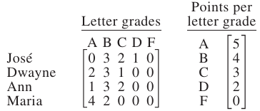

For the Classic ACT exam:
The ACT Mathematics test is a timed exam...60 questions in 60 minutes
This implies that you have to solve each question in one minute.
Each of the first 20 questions (less challenging) will typically take less than a minute a solve.
Each of the next 20 questions (medium challenging) may take about a minute to solve.
Each of the last 20 questions (more challenging) may take more than a minute to solve.
The goal is to maximize your time.
You use the time saved on the questions you solve in less than a minute to solve questions that will take more
than a minute.
So, you should try to solve each question correctly and timely.
So, it is not just solving a question correctly, but solving it correctly on time.
Please ensure you attempt all ACT questions.
There is no negative penalty for a wrong answer.
Also: please note that unless specified otherwise, geometric figures are drawn to scale. So, you can figure out
the correct answer by eliminating the incorrect options.
Other suggestions are listed in the solutions/explanations as applicable.
These are the solutions to the ACT past questions on the topics: Linear Algebra.
When applicable, the TI-84 Plus CE calculator (also applicable to TI-84 Plus calculator) solutions are provided
for some questions.
The link to the video solutions will be provided for you. Please
subscribe to the YouTube channel to be notified of upcoming livestreams. You are welcome to ask questions during
the video livestreams.
If you find these resources valuable and helpful in your passing the
Mathematics test of the ACT, please consider making a donation:
Google charges me for the hosting of this website and my other
educational websites. It does not host any of the websites for free.
Besides, I spend a lot of time to type the questions and the solutions well.
As you probably know, I provide clear explanations on the solutions.
Your donation is appreciated.
Comments, ideas, areas of improvement, questions, and constructive
criticisms are welcome.
Feel free to contact me. Please be positive in your message.
I wish you the best.
Thank you.
(1.) Last semester, each of the 4 students listed below took 6 classes worth 1 credit each.
In the 1st matrix, the row corresponding to each student gives the counts of the letter grades earned by that
student.
The second matrix gives the point value of each letter grade.

The grade point average of each student is the total number of grade points earned by that student divided by
that student's total number of class credits.
To the nearest 0.01, what is Ann's grade point average?
$
\underline{Ann} \\[3ex]
Grade\;\;Point\;\;Average = \dfrac{\Sigma Number\;\;of\;\;Grade\;\;Points}{\Sigma
Number\;\;of\;\;class\;\;credits} \\[5ex]
= \dfrac{1(5) + 3(4) + 2(3) + 0(2) + 0(0)}{6(1)} \\[5ex]
= \dfrac{5 + 12 + 6}{6} \\[5ex]
= \dfrac{23}{6} \\[5ex]
= 3.833333333 \\[3ex]
\approx 3.83...to\;\;the\;\;nearest\;\;0.01 \\[3ex]
$
Student: We were given the grades for 5 classes
But you used the number of credits for 6 classes
May you please explain? Teacher: Nice observation.
The question specified 6 classes of 1 credit each.
We have to use what the question gave us.
Besides, if you decide to divide by 5(1), the answer is not listed in the option.
Be it as it may, we have to use what we are given.
(2.)
(3.) The cost of 2 notebooks and a package of pencils is $7.00
The cost of 3 notebooks and 2 packages of pencils is $11.00
What is the cost of 1 notebook and 1 package of pencils?
(6.) Given matrices A and B such that $A = \begin{bmatrix}
-7 & 2 & 4 \\[2ex]
-1 & 0 & -3
\end{bmatrix}$ and $B - A = \begin{bmatrix}
6 & 7 & 4 \\[2ex]
1 & -1 & -4
\end{bmatrix}$, what is matrix B?
(11.) A lawn-and-garden store sells 2 types of grass seed: shade and sun.
The numbers of bags sold on Friday and Saturday last week are given in matrix A; the selling price per bag and
the profit per bag are given in matrix B.
Price and profit are in dollars.
What is the total profit for the sale of the 2 types of grass seed sold on Friday and Saturday?